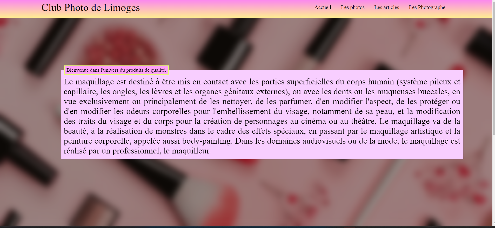

bd_connexion.php pour la connexion à la base de données.connexionPDO().connexionPDO() dans bd_connexion.php.Attributs privés :
addEtudiant() : Ajoute l'étudiant à la base de données.Attributs privés :
getUnePromo($code) : Récupère les détails d'une promotion avec les étudiants associés.
$promo = new Promotion('B2SIO', 'Classe de BTS SIO 2ème année');
$etudiant = new Etudiant('E7', 'Petit', 'Simon', $promo);
$etudiant->addEtudiant();
$etudiant = new Etudiant();
$etudiants = $etudiant->getEtudiants();
$promo = new Promotion();
$promoDetails = $promo->getUnePromo('B2SIO');

Ce projet consiste en une API REST développée en PHP permettant la gestion des étudiants. Elle offre des fonctionnalités CRUD (Create, Read, Update, Delete) pour interagir avec une base de données d'étudiants.
POST /etudiant.php : Ajouter un nouvel étudiant.GET /etudiant.php : Récupérer tous les étudiants.GET /etudiant.php?id=X : Récupérer un étudiant spécifique (remplacez X par l'ID de l'étudiant).DELETE /etudiant.php?id=X : Supprimer un étudiant spécifique (remplacez X par l'ID de l'étudiant).PUT /etudiant.php?id=X : Mettre à jour un étudiant spécifique (remplacez X par l'ID de l'étudiant).Pour utiliser cette API, vous pouvez envoyer des requêtes HTTP à ses différents endpoints en utilisant des outils comme Postman, cURL, ou même depuis votre propre application.
POST /etudiant.php avec les données appropriées dans le corps de la requête.GET /etudiant.php.GET /etudiant.php?id=X.DELETE /etudiant.php?id=X.PUT /etudiant.php?id=X avec les nouvelles données dans le corps de la requête.
style.css.
Ce projet consiste en une application web de gestion de photos développée en PHP. Elle offre des fonctionnalités CRUD (Create, Read, Update, Delete) pour interagir avec une base de données de photos.
1. Page d'accueil (index.php): Contenu : Message de bienvenue et informations sur le maquillage. Inclusions : Feuille de style : style.css. En-tête : bloc_entete.php. Menu : bloc_menu.php. Pied de page : bloc_pied.php. Contenu supplémentaire spécifique à la page d'accueil (accueil.php). 2. Contenu de la Page d'Accueil (accueil.php): Contient probablement un contenu spécifique ou des fonctionnalités pour la page d'accueil. 3. Liste des Photos (partie1.1liste_photos.php): Fonctionnalité : Affiche une liste de photos en fonction du type sélectionné. Fonctionnalités : Menu déroulant pour choisir un type de photo. Formulaire pour soumettre le type sélectionné. 4. Informations Détaillées sur une Photo (partie1.2info_photos.php): Fonctionnalité : Affiche des informations détaillées sur une photo sélectionnée. Fonctionnalités : Récupère et affiche des détails depuis la base de données en fonction de la photo sélectionnée. 5. Liste des Articles (partie2.info_article.php): Fonctionnalité : Affiche une liste d'articles. Fonctionnalités : Détails sur chaque article, y compris les photos associées. Formulaire pour ajouter de nouvelles photos aux articles. 6. Informations sur les Photographes (partie3.photographe.php): Fonctionnalité : Liste tous les photographes et permet des modifications. Fonctionnalités : Option pour modifier les informations d'un photographe. Formulaire pour mettre à jour les détails du photographe. Points Généraux : Style : Style cohérent à travers les sections avec style.css. Interaction avec la Base de Données PHP : PHP est utilisé pour se connecter à une base de données, récupérer des données et générer du contenu dynamiquement. Structure Modulaire : Les sections sont divisées en différents fichiers pour la maintenabilité. Points Additionnels : Assurez-vous d'une gestion appropriée des erreurs, de la validation et des mesures de sécurité, en particulier lors de l'interaction avec une base de données. Considérez l'organisation supplémentaire du code PHP pour la clarté et la maintenabilité. Considérez l'utilisation de fonctions PHP pour éviter la duplication de code. Considérez l'utilisation de classes PHP pour encapsuler les données et les opérations liées aux photos, aux articles et aux photographes. Une application de gestion d'étudiants utilisant une API REST.
Le projet vise à créer une application de gestion d'étudiants en utilisant une API REST pour effectuer des opérations CRUD (Create, Read, Update, Delete). L'application permet d'interagir avec un serveur distant pour récupérer, ajouter, modifier ou supprimer des informations sur les étudiants.
Le projet est divisé en plusieurs pages, chacune offrant une fonctionnalité spécifique :
Frontend : HTML, CSS
Backend : PHP
Communication avec l'API : cURL
codeFamillenomFamilleAlleeStockageproduitslaFamille (statique)CreateFamille :
findOneFamille et findAllFamille :
findOneFamille : Recherche une famille par code dans la base de données et renvoie une instance de Famille.findAllFamille : Récupère toutes les familles de la base de données et renvoie une liste d'instances de Famille.codeProduitnomProduitlaFamillefindAllProduit :